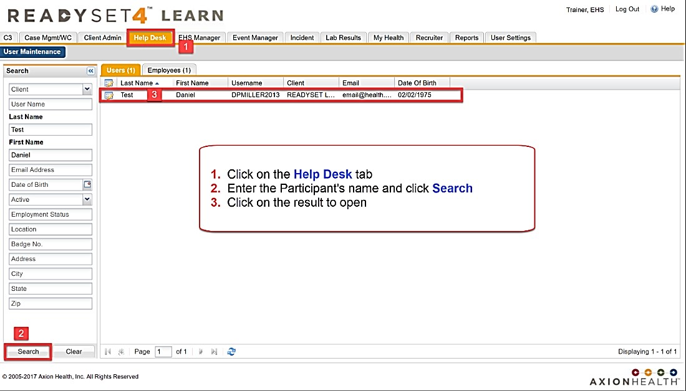
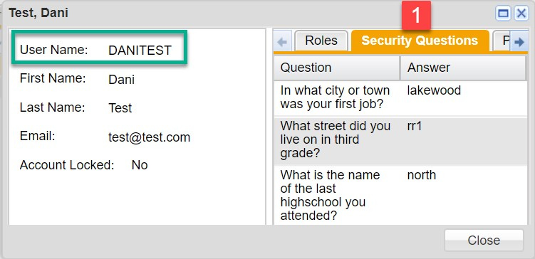
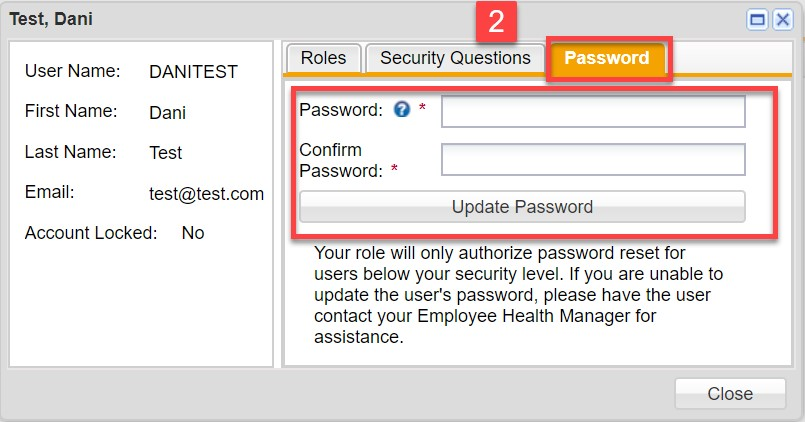
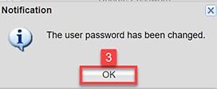

After logging into ReadySet, you can search for a participant’s username or reset passwords.

Try searching by using fewer letters (For example, "smi" for Smith, and "j" for joseph). Use date of birth if you have it, especially if you pull up common names



The username can be provided without resetting a password after verifying security questions.